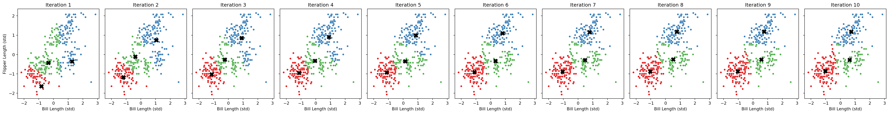
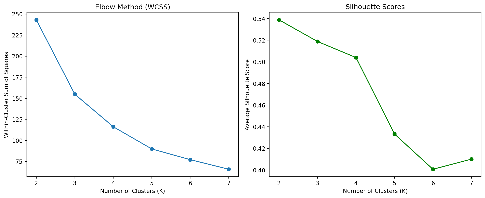

Machine Learning in Practice: K-Means Clustering and Key Driver Analysis
Author
Sara Antentas Oliveras
Published
June 7, 2025
Clustering Penguins with K-Means
Objective
In this post, I implement the K-Means clustering algorithm by hand to segment penguins based on two physical measurements: bill length and flipper length. This helps us explore whether simple morphological features can reveal natural groupings in the data, and how close our algorithm gets to classifying actual penguin species.
Dataset: Palmer Penguins
We use the Palmer Penguins dataset containing measurements for three penguin species:
Adelie
Chinstrap
Gentoo
import pandas as pd# Load and clean the datapenguins = pd.read_csv("palmer_penguins.csv")penguins = penguins.dropna()penguins.head()
species
island
bill_length_mm
bill_depth_mm
flipper_length_mm
body_mass_g
sex
year
0
Adelie
Torgersen
39.1
18.7
181
3750
male
2007
1
Adelie
Torgersen
39.5
17.4
186
3800
female
2007
2
Adelie
Torgersen
40.3
18.0
195
3250
female
2007
3
Adelie
Torgersen
36.7
19.3
193
3450
female
2007
4
Adelie
Torgersen
39.3
20.6
190
3650
male
2007
We focus on two numeric features:
bill_length_mm: Distance from the base of the beak to its tip.
flipper_length_mm: Distance from the shoulder to the flipper tip.
After removing missing values, we standardize the data to make both features comparable in scale (so both features contribute equally to distance measurements).
K-Means Algorithm: Manual Implementation
Here’s a clean, from-scratch implementation of the K-Means algorithm using only numpy. It includes logic to store each iteration’s centroids and cluster assignments so we can visualize how the algorithm converges.
import numpy as npfrom sklearn.preprocessing import StandardScaler# Use only the selected featuresfeatures = ['bill_length_mm', 'flipper_length_mm']X = penguins[features].values# Standardize the featuresscaler = StandardScaler()X_scaled = scaler.fit_transform(X)# Manual K-Means with internal iteration trackingdef manual_kmeans_with_plot(X, k=3, max_iters=10, seed=42): np.random.seed(seed) n_samples = X.shape[0] centroids = X[np.random.choice(n_samples, k, replace=False)] history = []for iteration inrange(max_iters):# Assign labels distances = np.linalg.norm(X[:, np.newaxis] - centroids, axis=2) labels = np.argmin(distances, axis=1)# Save current state history.append((centroids.copy(), labels.copy()))# Update centroids new_centroids = np.array([X[labels == j].mean(axis=0) for j inrange(k)])if np.allclose(centroids, new_centroids):break centroids = new_centroidsreturn history# Run K-Means and capture all iterationshistory = manual_kmeans_with_plot(X_scaled, k=3, max_iters=10)
Visualizing Algorithm Iterations
We plot each iteration in a side-by-side layout to “see” the algorithm working. Points are colored by cluster, and black Xs show centroid positions.
import matplotlib.pyplot as pltimport seaborn as sns# Plot all iterations in a single rowdef plot_kmeans_iterations(history, X_scaled): n_iter =len(history) fig, axes = plt.subplots(1, n_iter, figsize=(n_iter *3, 4), sharex=True, sharey=True)for i, (centroids, labels) inenumerate(history): ax = axes[i] sns.scatterplot(x=X_scaled[:, 0], y=X_scaled[:, 1], hue=labels, palette="Set1", ax=ax, legend=False, s=20) ax.scatter(centroids[:, 0], centroids[:, 1], c='black', s=100, marker='X') ax.set_title(f"Iteration {i+1}") ax.set_xlabel("Bill Length (std)")if i ==0: ax.set_ylabel("Flipper Length (std)")else: ax.set_ylabel("") plt.tight_layout() plt.show()# Call the plot functionplot_kmeans_iterations(history, X_scaled)

Observations from the Iteration Plots
The sequence of plots clearly illustrates how the K-Means algorithm iteratively improves its clustering:
Iteration 1 starts with randomly placed centroids, resulting in noisy and poorly separated clusters.
By Iteration 2–3, the centroids shift significantly, and clusters begin to form with clearer boundaries.
Iteration 4 onward shows stabilization. Most points remain in the same clusters, and centroid movement becomes minimal.
The algorithm converges quickly: by Iteration 6 or 7, the centroids hardly move, and point assignments are nearly final.
Each cluster becomes more compact and better defined over time, showcasing how K-Means minimizes intra-cluster variance with each iteration. This progression validates that our manual implementation is functioning as expected.
Comparing to Built-in K-Means
To validate the results, I ran sklearn.cluster.KMeans and compared the cluster assignments and centroids.
Both clustering results are visually very similar: they separate the penguins into three compact and distinct groups.
While the color assignments differ (this is expected due to arbitrary cluster label ordering), the underlying cluster structure is nearly identical.
The centroids (black X’s) fall in comparable locations in both versions, indicating that the two implementations converge toward the same solution.
This confirms that my manual implementation is not only correct, but also performs competitively with a production-level machine learning library.
Overall, the comparison shows strong agreement between my implementation and the built-in algorithm, supporting the correctness of my clustering logic and distance calculations.
Choosing the Right Number of Clusters
I evaluated two metrics for different values of K from 2 to 7:
WCSS (Elbow Method) – measures compactness
Silhouette Score – measures separation between clusters
from sklearn.metrics import silhouette_score# Evaluate WCSS and Silhouette for K = 2 to 7wcss = []silhouette_scores = []K_range =range(2, 8)for k in K_range: kmeans = KMeans(n_clusters=k, random_state=42, n_init=10) labels = kmeans.fit_predict(X_scaled) wcss.append(kmeans.inertia_) silhouette_scores.append(silhouette_score(X_scaled, labels))# Plot both metrics side by sidefig, axes = plt.subplots(1, 2, figsize=(12, 5))# WCSS plotaxes[0].plot(K_range, wcss, marker='o')axes[0].set_title("Elbow Method (WCSS)")axes[0].set_xlabel("Number of Clusters (K)")axes[0].set_ylabel("Within-Cluster Sum of Squares")# Silhouette score plotaxes[1].plot(K_range, silhouette_scores, marker='o', color='green')axes[1].set_title("Silhouette Scores")axes[1].set_xlabel("Number of Clusters (K)")axes[1].set_ylabel("Average Silhouette Score")plt.tight_layout()plt.show()

Elbow Method (Left Plot):
The Within-Cluster Sum of Squares (WCSS) drops sharply from \(K = 2\) to \(K = 3\), and then levels off.
This creates an “elbow” at \(K = 3\), indicating that adding more clusters beyond this point provides diminishing returns.
This is a classic visual cue that 3 clusters balance compactness and simplicity.
Silhouette Score (Right Plot):
The highest silhouette score occurs at \(K = 2\), meaning the data is most cleanly separated into 2 groups.
However, \(K = 3\) still maintains a strong silhouette score (~0.52), which is a good indication of well-defined clusters.
Scores drop significantly after \(K = 4\), suggesting poorer structure for higher values of K.
Conclusion
While silhouette score favors \(K = 2\), the elbow method and biological context (three penguin species) both support \(K = 3\) as the best choice. It offers a great balance between internal compactness and external separation, and aligns with our goal of uncovering species-level patterns.
Key Drivers Analysis
Objective
The goal of this analysis is to identify which features most influence customer satisfaction with a credit card product. Using the provided dataset, I quantify variable importance using several common methods from both classical and machine learning-based approaches.
Dataset: Credit Card Perceptions
The dataset includes individual-level responses rating satisfaction with a payment card (on a 1–5 scale) along with binary indicators of various perceptions about the card (e.g. “trust”, “easy to use”, “offers rewards”).
We focus on the following 9 features as potential key drivers of satisfaction:
trust
build
differs
easy
appealing
rewarding
popular
service
impact
import pandas as pddrivers = pd.read_csv("data_for_drivers_analysis.csv")drivers.head()
I compute and compare the importance of each predictor using:
Pearson Correlations
Standardized Regression Coefficients
Usefulness (ΔR²)
Shapley Values (approximated)
Johnson’s Relative Weights (ε)
Random Forest Gini Importance
Pearson Correlation
I calculate the squared Pearson correlation between each predictor and satisfaction to reflect the simple bivariate strength of association.
# Calculate Pearson correlations between satisfaction and each predictor# Drop ID and brand columnscorrelations = drivers.corr(numeric_only=True)['satisfaction'].drop(['satisfaction', 'id', 'brand'])# Create DataFrame with Pearson r and r^2pearson_df = correlations.rename('Pearson r').to_frame()pearson_df['Pearson r^2'] = pearson_df['Pearson r'] **2
Standardized Regression Coefficients
I standardize both \(X\) and \(y\), then fit a linear regression. Squaring the standardized coefficients approximates the relative explanatory power of each variable when adjusting for others.
from sklearn.linear_model import LinearRegressionfrom sklearn.preprocessing import StandardScaler# Standardize both X and yX_scaled = StandardScaler().fit_transform(X)y_scaled = StandardScaler().fit_transform(y.values.reshape(-1, 1)).ravel()# Fit linear regression model on standardized variables, get standardized coefficients, and square themmodel = LinearRegression().fit(X_scaled, y_scaled)coef_df = pd.DataFrame({'Standardized Coef^2': model.coef_**2}, index=X.columns)
Usefulness
For each feature, I drop it, refit the model, and record the drop in \(R^2\). I then normalize these values to get percentages.
r2_full = LinearRegression().fit(X, y).score(X, y)usefulness = {col: r2_full - LinearRegression().fit(X.drop(columns=[col]), y).score(X.drop(columns=[col]), y) for col in X.columns}usefulness_df = pd.DataFrame.from_dict(usefulness, orient='index', columns=['ΔR²'])usefulness_df['% Usefulness'] =100* usefulness_df['ΔR²'] / usefulness_df['ΔR²'].sum()
Shapley Values
Using a Monte Carlo approximation (instead of all 9! permutations), I randomly sample permutations and compute the average marginal \(R^2\) contribution.
def shapley_approx(X, y, n_samples=1000):import randomfrom sklearn.linear_model import LinearRegression features =list(X.columns) shapley_vals = pd.Series(0.0, index=features)for _ inrange(n_samples): perm = random.sample(features, len(features)) used = [] prev_r2 =0for f in perm: used.append(f) r2 = LinearRegression().fit(X[used], y).score(X[used], y) shapley_vals[f] += r2 - prev_r2 prev_r2 = r2 shapley_vals /= n_samplesreturn (shapley_vals / shapley_vals.sum() *100).to_frame("Shapley %")shapley_df = shapley_approx(X, y, n_samples=1000)
Johnson’s Relative Weights
This is a fast matrix-based approximation of Shapley values. It decomposes the \(R^2\) using an eigenvalue transformation of the predictor correlation matrix.
This table summarizes six different metrics of variable importance — from simple correlations to advanced model-based methods — to assess what drives customer satisfaction.
Top Drivers Across Methods:
impact, trust, and service consistently rank in the top 3 across nearly all importance measures.
These findings suggest that customers value cards that make a meaningful difference in their lives, are associated with trusted brands, and provide high-quality service.
Mid-Tier Drivers:
appealing and easy show moderate importance in some methods (e.g., Gini and Shapley) but very little contribution in linear regression settings.
This indicates they may contribute non-linearly or be correlated with other top predictors.
Lower Impact Drivers:
build, rewarding, differs, and popular consistently show low values across most methods.
These variables may be less differentiating or are possibly redundant with more impactful drivers.
Method Comparison Insights
Pearson Correlation gives a quick sense of marginal relevance but doesn’t adjust for other variables.
Usefulness (\(\Delta R^2\)) and Shapley values offer robust, interpretable estimates of each variable’s added value.
Johnson’s Epsilon approximates Shapley results with high speed and fidelity.
Random Forest Gini provides a nonlinear, ensemble-based perspective and generally agrees with the top-ranked variables.
Conclusions
Across both statistical and machine learning methods, the features impact, trust, and service emerged as the strongest and most consistent drivers of satisfaction. These results are valuable for prioritizing product messaging, feature design, and marketing focus in customer-facing strategies.